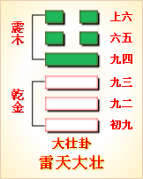

第三十四卦初九爻详解 第三十四卦九二爻详解 第三十四卦九三爻详解
第三十四卦九四爻详解 第三十四卦六五爻详解 第三十四卦上六爻详解
周易第三十四卦 大壮 雷天大壮 震上乾下
大壮：利贞。 彖曰：大壮，大者壮也。刚以动，故壮。大壮利贞;大者正也。正大而天地之情可见矣!
象曰：雷在天上，大壮;君子以非礼勿履。
初九：壮于趾，征凶，有孚。象曰：壮于 趾，其孚穷也。
九二：贞吉。象曰：九二贞吉，以中也。
九三：小人用壮，君子用罔，贞厉。羝羊触藩，羸其角。象曰：小人用壮，君子罔也。
九四：贞吉悔亡，藩决不羸，壮于大舆之輹。象曰：藩决不羸，尚往也。
六五：丧羊于易，无悔。象曰：丧羊于易，位不当也。
上六：羝羊触藩，不能退，不能遂，无攸利，艰则吉。象曰：不能退，不能遂，不祥也。艰则吉，咎不长也。
大壮卦卦象，雷天大壮卦的象征意义
大壮卦，此卦是异卦相叠。下卦为乾，上卦为震。震为雷，乾为天。天鸣雷，云雷滚，声势宏大，阳气盛壮，万物生长，刚壮有力，所以称之为“壮”。大而且壮，故名“大壮”。
大壮卦位于遁卦之后，《序卦》中说道：“物不可终遁，故受之以大壮。”退避到一定程度，就须转而走向大壮。
大壮卦就是指非常强盛的意思。《象》中这样分析本卦：雷在天上，大壮;君子以非礼弗履。这里指出，大壮卦的卦象是乾(天)下震(雷)上，为震雷响彻天上之表象。雷在天上发挥威力，却动摇不了天在下的半根毫毛，这是壮大的表现。君子应该学习这种精神，严格要求自己，不要越出准则和规律去做非分之事。像天上的雷在轰鸣，也绝对动摇不了君子坚持礼仪的正当行为。
大壮卦象征十分强盛，给人的启示就是壮勿妄动，属于中上卦。这一卦属于消息卦，代表二月。《象》中这样评断此卦：卦占工师得大木，眼前该着走上路，时来运转多顺当，有事自管放心。
此卦卦名为大壮。《说文》中说：“壮，大也。”古人将三十岁的男子称为壮年。可见“壮”的意思便是壮大、强壮的意思。遁卦是归隐保全，就好比隐者居于山林中积蓄自己的能力，经过不断的积蓄，现在终于变得能力强大了。所以遁卦接下来便是大壮卦。这就好比董仲舒经年苦读圣贤之书，最后终于学有所成，成为诸子百家的集大成者。这就是《序卦传》中所说的：“物不可以终遁，故受之以大壮。”可是大壮卦并没有前进的意思，只是表示通过“遁”，已使力量得到了最大的积蓄，是蓄势待发的意思。
大壮卦卦画：大壮卦的卦画是下面四个阳爻，上面两个阴爻，与遁卦的排列顺序正好相反。
大壮卦卦象：从卦象上进行分析，下面的阳爻象征阳气的强盛，上面的阴爻象征阴气的削弱。大壮卦是十二消息卦之一，代表的节气为春分。大壮六爻代表惊蛰至清明的三十余天。五天为一候，一爻代表一候。这时候万物都开始活动起来，草木生长，动物们也开始繁衍，并且此时已过惊蛰，天上始有雷声，所以大地上呈现出一派声势浩大的景象。大壮卦上卦为震为雷，下卦为乾为天，惊雷响彻天际，便是大壮卦最大的形象。
关键词：周易,大壮卦,雷天大壮,震上乾下
大壮卦：吉利的占问。
初九：脚趾受了伤。出行，凶险。有所收获。
九二：占得吉兆。
九三：奴隶狩猎凭力大，贵族狩猎用猎网。占得险兆。公羊用头角撞篱笆，却被篱笆卡住了。
九四：占得吉兆，没有悔恨。公羊撞破篱笆，摆脱了羁绊，又撞在大车轮子上受了伤。
六五：羊在牧场上逃掉了。没有悔恨。
上六：公羊用头角撞篱笆，角被卡住，退不了，进不了。没有什么好处，占问旱情则得吉兆。
①大壮是本卦的标题。壮的意思是强健，伤。全卦的内容主要与畜牧有关。标题的“壮”字是卦中多见词。
②壮：用作“戕”，意思是伤。
③壮：强壮，力大。
④罔：古“网”字，用来捕兽的工具。
⑤羝 (dT)羊：公羊。藩;篱笆。
(6)羸(lei)：用作“累”，意思是用绳子捆住。
(7)决：破。
(8)輹：用作“辐”，这里指车轮。
(9)易：用作“场”，指放牧的牧场。
(10)遂：进。